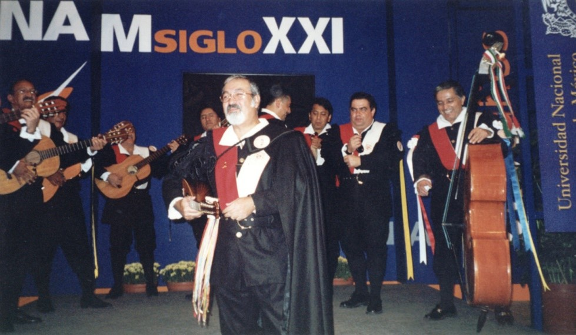

Rito de jura
El 18 de mayo 2001 en ceremonia única y secreta, ante el tuno veterano intemporal representado por un cráneo humano con uno de los trajes rojos y una de las mandolinas originales en una mano y una botella de licor en la otra con la indispensable presencia femenina al natural cuya única prenda fue una roja transparencia inferior, todo bajo la luz de las velas, se pasó lista y después de que el Comendador leyó la siguiente invocación y de que esta fue jurada por la asamblea, fueron impuestas las becas a cada uno de los Paleotunos.
“Tunos fraternos, Faz ogora treinticuatro años del establecimento de nosa gaudiosa i gloriosa tuna, con recuerdos nosos edificada, su credo, su vida i su fama. Grande evento único e histórico faz agora juntadonos por la recia jura que aqueste ofrecemos a la Paleotuna de Ingeniería con probada hermandad i amor a la música. Traenos aquende vivencias nosas, imborrables fechos que han forjadonos como seres sensibles i creativos. Traenos aquende la algazara de nosos cantares, natural e incurable desasosiego que por la música llevamos. Traenos aquende contento i solaz de convivir i departir comunes gajes, oficios i tropelías nosas. Traenos en suma el arte del buen tunar, orgulloso pendón de nuestro corazón bohemio i andariego. Agora honremos estas becas con el conjuro de inédita seña do juran i juraran tunos todos. Genialis – fazer del genio, el ingenio i la alegría creadora nosa profunda seña. Vinolentum – fazer del buen vino i la buena mesa mercedes eternas como grana i albo pendón noso. Voluptas – do vierades muger, aprecialle, complacelle, satisfacelle, tomalle i amalle másque sea en anima, corazón o corpóreamente.” “¡TUNOS, EN HERMANDAD JURAMOS!”
De esta solemne manera se formalizó la unidad del grupo, celebrándose con un alegre brindis engalanado con la asistencia de “Lolita” la del cantar.
Se tenía la idea de realizar la primera presentación oficial en el Auditorio Barros Sierra de la Facultad, sin embargo por diversas razones y eventualidades esta se realizó en el Auditorio de la Facultad de Odontología el histórico 16 de agosto do a pesar de los temores, todos estuvieron ahí.
El primero en llegar con su familia fue el Maestre Don Piojo y luego, recién desembarcado de las llanuras Colombianas, el Comendador Don Pato.
Que corre a ver la presentación, que ve por la camisa del Chemisse, que no tiene memoria la computadora, que hay que bajar los instrumentos y por fin... ¡faltó la camisa del Maestre Don Mosco!
Uno a uno fueron llegando los paleotunos, exceptuando la Scoobynave de Xochihouston que llegó cargada.
Momento memorable la convivencia a la hora de enfundarse por primera vez los trajes, acaecido en el salón situado frente al auditorio. Un salón amplio, escalonado y de ventanas indiscretas.
Se sentía una mezcla de emoción, alegría y nerviosismo como si fuéramos nuevamente novatos. Carlos, Don Zorra, estuvo pasando la bota con el consabido bálsamo calmante y afinador.
Mezclados con el público y familiares fuimos entrando al recinto, colocándonos en espera en el diestro pasillo, acomodando estuches y revisando afinaciones.
A eso de la siete y cuarto pasadas, la Dra. Mireya, Directora del SUA, ante aproximadamente 180 personas, dio inicio al evento, con una presentación multimedia de entrada.
Al concluir ésta y a ritmo de Caminito del Santuario, abandonado el pasillo con alegría y donaire entró al recinto por primera vez en su historia la Paleotuna de Ingeniería.
Después de más de tres años de que se empezó a reunir el grupo, coronando ensayos semanales, preparativos de trajes, instrumentos y repertorio, de planes frustrados y una presentación previa con trajes de calle, inicia su recorrido formal nuestra Paleotuna.
Después de más de tres años de que se empezó a reunir el grupo, coronando ensayos semanales, preparativos de trajes, instrumentos y repertorio, de planes frustrados y una presentación previa con trajes de calle, inicia su recorrido formal nuestra Paleotuna.
El Palomo hizo de improvisado maestro de ceremonias y con viejos chistes y triquiñuelas logró captar la atención del público e incluso arrancó algunas risas
Conforme el repertorio fue avanzando el público empezó a integrarse, siguiendo con palmas algunas de las canciones, enviando mensajes a prometidas y prometidos otros, todos gritando y aplaudiendo al final de cada pieza, disfrutando del espectáculo tanto autoridades, maestros, familiares y alumnos.
En la euforia de la primera vez, Don ScoobyDoo se adueño del micrófono y sustituyo la gracia por enjundiosas intervenciones.
En el intermedio, se presentó al público a cada uno de los miembros de la Paleotuna, tal como lo mandan los canones, por su mote. Un grupo de damiselas estudiantes de Odontología, algunas de no malos bigotes, colocaron una cinta conmemorativa a cada uno de nosotros.
La Directora del SUA nos entregó un diploma a cada uno, con el consiguiente y particular festejo de familiares, amigos, algunos despistados del público, una que otra posible admiradora y por supuesto algunos extunos que se lograron colar al evento como la Cucaracha, el Pingüino y el Maguey entre otros.
Al terminar el Popurrí Etílico lanzamos un “Goya” y un “Vino” muy bien recibidos y que los alumnos asistentes reforzaron con la porra de Odontología.
Sebastián, hijo del Chemisse, puso la nota tierna, desparpajada e inocente.
Con Sebastopol como despedida, la Paleotuna concluyó su primera presentación con una calurosa ovación como premio. Errores?, por supuesto que más de uno, afortunadamente desapercibidos para todos excepto para nosotros.
Y aquí dejo esta crónica para no enredarme en más malabarismos que los que tuve que ejecutar en tan celebrada fecha!
Desde esa primera presentación, la Paleotuna forma parte de los grupos musicales de la Facultad de Ingeniería y hemos participado en su representación en varios conciertos durante las celebraciones del 450º aniversario de la UNAM.